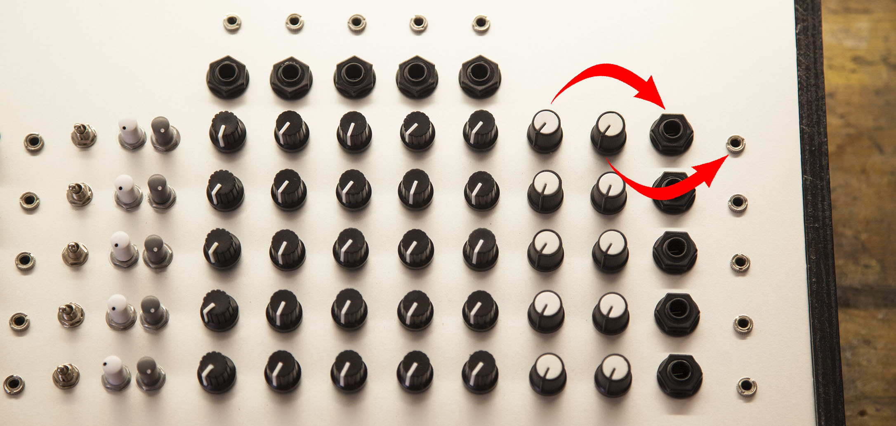

BASICS
Your mixer's structural features
>>> See gallery for application examples
Input/output gain
You can choose any gain value, even individually for each input or output channel.
A gain of 2.2x is usually good to use with guitar pedals and low-power gear. A 5x gain is good if you want to interact with synthesizers, like the Eurorack format.
- Gains up to 20x are available, without distortion.
- You can also have a negative gain, AKA attenuation, for example 0.2x (or 1/5x) to act as a bridge between hot synth voltages and line level.
- Max flexibility with a variable gain potentiometer, e.g. in range [0.2x..5x]
- Multiple outputs, each with its own gain control 
Connections
Input and output sockets can be of any type you wish, you can also have multiple individually buffered connectors on inputs/outputs, so you don't need adapters, making patching faster and easier.
Your inputs and outputs can be either mono or stereo, balanced or unbalanced.
One common trick for inputs is to have left and right as individual inputs, where the right channel is normalized to the left, so you can use it as stereo by connecting both, but if you only connect something in the left input, it will copy it to the right channel, and work as a mono input.
Available input/output sockets:
- 1/4" jack
- 3.5mm jack (minijack)
- Banana jack
- XLR (balanced ins/outs only)
- RCA
Need some other exotic connector not on this list? Just ask!
Pan/Balance
A panning knob can be added to control the position of the sound in the stereo field.
With a mono-to-stereo architecture it will be a mono panning knob, while in a stereo-to-stereo situation it will act as stereo balance.
Geek bonus; you can also have true stereo panning, enabling you to set the stereo position of left and right channels individually, with two separate knobs.